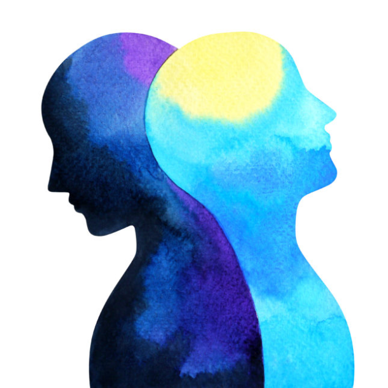

Emotions are something we make us human. But these emotions are given more importance than they should actually get. When it comes to expressing our emotions we start by a promise that it means something and if it means something we need to do something about it. There are generally two types of people when it comes to expressing emotions. First ones are those who allow themselves to be dragged around by their emotions and the second ones are those who suppress their emotions or bypass them or just ignore them. But what if there is a middle way when it comes to expressing our emotions. A way which helps you not to affect your relationships in a bad way.
The problem actually starts when we try not to feel the emotions or just try to bypass them. Trying to decide how to feel these emotions is where the confusion in the mind begins. When we try to put labels on emotions trying to decide which ones are good and which ones are bad or which ones are okay to feel all the chaos in the mind starts. To tell you the truth there is no “good” or “bad” emotion.The feeling is just energy which passes through you. They come passing from the thoughts in your brain through moment by moment. We are human beings and it’s our basic tendency to interpret events as they occur and out on our personal meaning. Seeing through that perspective we then have feeling and emotions about the meaning, we have attached to the event.
It’s just two simple stepsNoticing them for what they are and then understanding what you feel, it doesn’t actually say anything about you or your self-worth. It does not actually even deserve the level of priority which we give. There is nothing we can do to “fix it” or “correct it”. It will pass on its own. We will have new thought new feeling about the event but that’s he we are designed as humans. That’s how our mind works. Emotions are nothing but temporary. It’s not like there is a permanent stone sitting inside. And one emotion is not more important than others. Our anger our sadness or resentment come from thoughts. Similarly our happiness our excitement also comes from thought. But somehow the thought of resentment seems more powerful than the thought of excitement. But the important thing we need to see is that these both feelings come from thoughts and somehow we just give more importance to the resentment thought than that of excitement thought. One is not more important than others.
We need to realize the fact that our default is innate calm and we will at the end of any kind of emotions whether good or bad we will return to our default settings. For instance, remember when you scored less in a test or lost a mmatch remember how sad were you but then you automatically after some time came back to your default setting. This is what our system does with or without any help. Knowing this will allow us to navigate our emotions and live with grace. This will allow us to feel all kinds of emotions without becoming them. This also helps us not to hold on our bad emotions more than it’s required. The beauty of operating as a human is we can give ourselves permission to express emotions without any knee jerk reactions. It means we can give yourself permission to feel the anger the resentment and in the next moment, we can let that emotion pass without any judgments or attachments. As that emotion passes we can think in a fresh perspective we can be more assertive and coherent about what we want from the situation. Now let’s jump back to the original question how to express emotion without losing your cool? In a nutshell, you can’t Sometimes you will cry, rage and have anger about stuff. And other times you’ll see something different about that thing. It’s part of being human. But knowing that these emotions are temporary and don’t mean anything specific about WHO you are and your self-worth is what is more important. This knowledge is what ensures you have less knee-jerk reactions and do less damage to yourself and others when you’re in a low mood. And it is what ensures that in the end you go back to that space within that is your default nature for a fresh perspective and sense of wellbeing. – ALWAYS